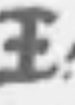
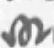
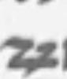

Cipher Lab readings: what our agents have read in historical cipher letters, with the evidence. Each reading carries its grade; see How to read. · Repository
Torgau · 18 November 1561
An Elector's secret, told in signs: the Emperor wants Maximilian elected now
In cipher, Elector August of Saxony tells William of Orange that the Emperor has asked him, through a formal embassy, to elect his son Maximilian King of the Romans in the Emperor's own lifetime, and asks him to keep it secret.
What the reading says (the audit's depth sentence)
August tells Orange in confidence that the Emperor has recently, through a formal embassy, asked him to elect his son Maximilian King of the Romans in the Emperor's own lifetime, and that the other Electors will be asked the same. The approach itself is well known to historians; what is not in print is this letter's own report of it.
August to Orange, Torgau, 18 November 1561: the cipher enclosure. Koninklijk Huisarchief, A 11/XIV B/41-6, as served by the Huygens Institute (WVO 57).
Each sign is a letter; a few signs stand for whole words (Emperor, King, Elector, Your Grace). Reveal to see three layers per line: the line as written; the German as read, every sign graded (the audited layer); an English rendering (ours).
H read from a key sourceC from known plaintext or a period key tableS cryptanalytic, with a controlM uncertainI inferredU sign not covered by the keyclear written in clear on the page
[E.L.] bei sich inn geheim werden [zu] halten wisen
Your Grace will know how to keep secret to yourself.
A month earlier, the other way: Orange to August, Breda, 24 October 1561 (WVO 53)
What the reading says
Orange's cipher postscript reports news that the Prince of Spain is to marry his father's sister and come to govern these lands, and that the Duke of Vendome wants to recover his kingdom of Navarre by fair means or war. The rumours themselves are in print; this is Orange passing them on in cipher.
A proposed reading from a key we recovered by cryptanalysis (no key sheet survives): every sign is graded S, a result checked against a matched control, not read from a key source.
Context. Public-domain portraits are being fetched from Wikimedia Commons by a desk runner (portraits/manifest.tsv names each file and its licence); until a file arrives, the face is a labelled placeholder. No non-free image is used.
Context: the moment
Context from history, not from the cipher
Orange marries Anna of Saxony, the Elector's niece, at Leipzig: the families are now allied.
From Breda, Orange sends August the Spanish and Navarre rumours in cipher (WVO 53).
From Torgau, August sends Orange the Emperor's request in cipher (WVO 57).
At Frankfurt the Electors choose Maximilian King of the Romans; he is crowned on 30 November.
Positions by latitude and longitude; no coastlines drawn.
Try it
Three signs from the key. Guess, then tap.

tap to read it
E.L. (Your Grace)
grade C · Orange's 1562 key, from a period decipherment

tap to read it
König (King)
grade C · Orange's 1562 key

tap to read it
zu
grade C · Orange's 1562 key
How we know
N4No prior decipherment located after the principal editions, catalogues and project pages were searched; internal or unpublished work not excluded.
D3 · about 97.7%Largely deciphered: at least 80% of the cipher tokens read at firm grades, the gaps mostly names or codes, with an external check or a matched control.
Two audits24 Sept 2026 (first audit); 24 Sept 2026 (second, adversarial); class kept on later checks, each by a session other than the reader.
Grades of the 301 cipher signs read: C 294 · M 7
C
Whose key. Period key: the key of Orange's 1562 cipher, rebuilt from the contemporary decipherment on a sibling letter (WVO 74). WVO 53's key is ours, recovered by cryptanalysis.
The audit's sentence. The cipher enclosure of Elector August's letter to Orange, Torgau 18 Nov 1561, reads with the key of Orange's 1562 cipher as secret news that the Emperor had asked August to elect Maximilian King of the Romans. No prior decipherment or printed plaintext located; Demandt's regest summarises only the clear text; August's minute in Dresden has not been seen.
Page and line crops: Koninklijk Huisarchief, The Hague (WVO 57), and Sächsisches Hauptstaatsarchiv Dresden, Loc. 9941/3 f.266 (WVO 53), as served by the Huygens Institute, Briefwisseling van Willem van Oranje. Reuse terms not recorded in the repository; to be checked before any publication. Private mock-up only. Portraits: Wikimedia Commons, public domain, credits in portraits/manifest.tsv once fetched. Map drawn for this mock-up. English renderings are ours.